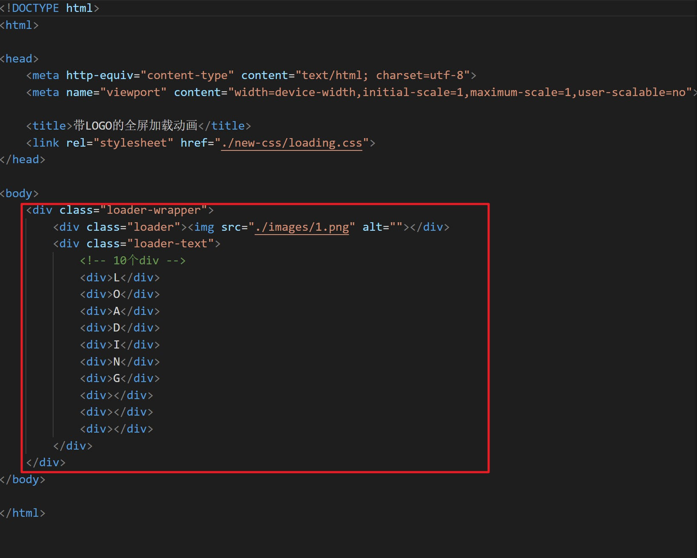

想法来自 Vino 大佬的博客，我觉得使用一个 Loading 页面来缓解博客渲染速度慢带来的尴尬是件酷酷的事情。自己捣鼓了一下如何把任何一个页面改成 Hexo 博客下的 Loading 页面，发现其实还是比较简单的。
下面我来说一下我魔改的具体步骤。
一、制作 Loading 页面
- 首先我们需要准备一个已经写好的 Loading 动画页面。
（这种动画页面网上有很多大佬提供了开源项目，咋就不重复造轮子了，嘿嘿~）
我这里以大佬 YanH 写的 Loading 动画页面为例。
其页面具体代码如下：
<!DOCTYPE html>
<html>
<head>
<meta http-equiv="content-type" content="text/html; charset=utf-8">
<meta name="viewport" content="width=device-width,initial-scale=1,maximum-scale=1,user-scalable=no">
<title>带LOGO的全屏加载动画</title>
<link rel="stylesheet" href="118.css">
</head>
<body>
<div class="loader-wrapper">
<div class="loader"><img src="/images/1.png" alt=""></div>
<div class="loader-text">
<!-- 10个div -->
<div>L</div>
<div>O</div>
<div>A</div>
<div>D</div>
<div>I</div>
<div>N</div>
<div>G</div>
<div></div>
<div></div>
<div></div>
</div>
</div>
</body>
</html>*{
/* 初始化 */
margin: 0;
padding: 0;
}
body{
/* 100%窗口高度 */
height: 100vh;
}
.loader-wrapper{
/* 固定定位 */
position: fixed;
left: 0;
top: 0;
z-index: 1;
width: 100%;
height: 100%;
/* 溢出隐藏 */
overflow: hidden;
/* 渐变背景 */
background: linear-gradient(45deg,rgb(90,54,148) 0%,rgb(19,189,206) 33%,rgb(0,148,217) 66%,rgb(111,199,181) 100%);
background-size: 400%;
background-position: 0% 100%;
/* 执行背景渐变动画：动画名 时长 加速后减速 无限次播放 */
animation: gradient 7.5s ease-in-out infinite;
}
/* 旋转loading的外圈 */
.loader{
width: 150px;
height: 150px;
border: 3px solid transparent;
border-top-color: #fff;
/* 相对定位 居中 */
position: relative;
left: 50%;
top: 50%;
margin-left: -75px;
margin-top: -75px;
z-index: 2;
border-radius: 50%;
display: flex;
justify-content: center;
align-items: center;
/* 执行旋转动画 */
animation: spin 1.7s linear infinite;
}
/* 旋转loading的中圈 */
.loader::before{
content: "";
/* 绝对定位 */
position: absolute;
top: 5px;
left: 5px;
bottom: 5px;
right: 5px;
border-radius: 50%;
border: 3px solid transparent;
border-top-color: #fff;
/* 执行反向的旋转动画 reverse:反向 */
animation: spin 0.6s linear infinite reverse;
}
/* 旋转loading的内圈 */
.loader::after{
content: "";
/* 绝对定位 */
position: absolute;
top: 15px;
left: 15px;
bottom: 15px;
right: 15px;
border-radius: 50%;
border: 3px solid transparent;
border-top-color: #fff;
/* 执行旋转动画 */
animation: spin 1s linear infinite;
}
/* logo */
.loader img{
width: 55%;
height: 55%;
border-radius: 50%;
/* 执行反向的旋转动画,时长必须和外圈的动画一致(不让其跟着旋转) */
animation: spin 1.7s linear infinite reverse;
}
.loader-text{
width: 50%;
height: 36px;
/* 绝对定位 水平居中 */
position: absolute;
top: 72%;
left: 50%;
transform: translateX(-50%);
z-index: 3;
/* 防止选取 */
user-select: none;
}
.loader-text div{
width: 30px;
height: 36px;
color: #fff;
font-size: 32px;
margin: 0 20px;
/* 绝对定位 */
position: absolute;
/* 默认隐藏+旋转180度 */
opacity: 0;
transform: rotate(180deg);
/* 执行文字移动动画 */
animation: move 2s linear infinite;
}
/* 最后面的三个圆 */
.loader-text div:nth-child(8)::before,
.loader-text div:nth-child(9)::before,
.loader-text div:nth-child(10)::before{
content: "";
width: 10px;
height: 10px;
border-radius: 50%;
background-color: #fff;
position: absolute;
left: 0;
bottom: 0;
}
/* 文字下的投影 */
.loader-text div::after{
content: "";
width: 10px;
height: 5px;
border-radius: 50%;
background-color: rgba(255,255,255,0.15);
position: absolute;
bottom: -40px;
left: 50%;
margin-left: -5px;
}
/* 最后面的三个圆的投影 */
.loader-text div:nth-child(8)::after,
.loader-text div:nth-child(9)::after,
.loader-text div:nth-child(10)::after{
left: 0;
margin-left: 0;
}
/* 接下来为各个文字设置动画延迟时间 */
.loader-text div:nth-child(2){
animation-delay: 0.2s;
}
.loader-text div:nth-child(3){
animation-delay: 0.4s;
}
.loader-text div:nth-child(4){
animation-delay: 0.6s;
}
.loader-text div:nth-child(5){
animation-delay: 0.8s;
}
.loader-text div:nth-child(6){
animation-delay: 1s;
}
.loader-text div:nth-child(7){
animation-delay: 1.2s;
}
.loader-text div:nth-child(8){
animation-delay: 1.4s;
}
.loader-text div:nth-child(9){
animation-delay: 1.6s;
}
.loader-text div:nth-child(10){
animation-delay: 1.8s;
}
/* 定义动画 */
/* 背景渐变动画 */
@keyframes gradient {
50%{
background-position: 100% 0%;
}
}
/* 旋转动画 */
@keyframes spin {
0%{
transform: rotate(0);
}
100%{
transform: rotate(360deg);
}
}
/* 文字移动动画 */
@keyframes move {
0%{
right: 0;
opacity: 0;
}
35%{
right: 41%;
opacity: 1;
transform: rotate(0);
}
65%{
right: 59%;
opacity: 1;
transform: rotate(0);
}
100%{
right: 100%;
transform: rotate(-180deg);
}
}- 用编辑器打开 CSS 文件, 在最后一行加上下面的代码（这是为了确保加载完成后关闭 Loading 页面用的。等到页面加载完毕后，我们只需给顶层 div 加上 loaded 类名即可）。
/* 加载完毕 */
#loader-box.loaded {
display: none;
}- 适配手机样式。一定要注意手机样式是否显示正常，如果不正常可以通过如下代码进行重新调整。
/*小屏幕下(手机类)的样式*/
@media only screen and (max-width: 601px) {
/* 你的代码 */
}
/*中等屏幕下(平板类)的样式*/
@media only screen and (min-width: 600px) and (max-width: 992px) {
/* 你的代码 */
}
/*大屏幕下(桌面类)的样式*/
@media only screen and (min-width: 993px) {
/* 你的代码 */
}- 最后注意调整 Loading 页面层级，使其在所有页面的最上面。
.loader-wrapper {/* 注意选择器要改成你的 Loading 页面 */
z-index: 10000/* 填写适合你自己博客的数字，确保 Loading 页面在所有页面最上面 */;
}二、引入自己的博客
修改好了 Loading 动画页面后就可以引入自己的博客中了。
- 首先，在主题文件夹中的
\layout\_widget\文件夹里创建一个loading.ejs文件。
- 用编辑器打开该文件，写入以下代码。
<% if (theme.preloader.enable) { %>
<div id="loader-box">
/* 你的 HTML 代码将放在这里 */
</div>
<script>
var endLoading = function () {
document.body.style.overflow = 'auto';
document.getElementById('loader-box').classList.add("loaded");
}
window.addEventListener('load',endLoading);
</script>
<% } %>- 打开准备的 Loading 动画 HTML 文件，将 <body> 标签下的所有内容复制到第 2 步注释标注的位置。

- 在主题目录下的 source 文件夹里找到 css 文件夹，新建一个 loading.css 文件，并将前面修改好的 CSS 文件内容复制进去、保存。
- 然后打开主题目录下的
_config.yml文件，添加如下代码，增加一个控制 Loading 页面的开关。
# 是否开启页面加载动画
preloader:
enable: true- 接着在主题目录下的
_config.yml找到libs的配置项，在css子项里添加自己的 loading.css 文件位置信息。参考代码如下。
libs:
css:
loadingPage: /css/loading.css- 紧接着我们就可以在页面中引用相关文件了。
- 打开
layout\_partial\head.ejs文件，在 head 标签里添加代码：
<!--自定义添加的 Loading Page CSS 样式--> <link rel="stylesheet" type="text/css" href="<%- theme.jsDelivr.url %><%- theme.libs.css.loadingPage %>">- 最后我们打开
layout\layout.ejs文件，在 body 标签下添加代码：
<!--自定义的 Loading Page--> <%- partial('_widget/loading') %> - 打开
三、部署
hexo cl && hexo g && hexo d 一键三连即可。具体一些细节需要根据自己的需求自己修改解决，这里只提供一个自定义 Loading 页面的大体思路，希望大家能自己思考，做出自己风格的独特 Blog，嘿嘿(●ˇ∀ˇ●)~
溜了~


![Hexo[Matery] 添加自定义 Loading 页面](/medias/featureimages/19.jpg)
![解决 hexo[Matery] 不算子统计失效问题](/medias/featureimages/21.jpg)